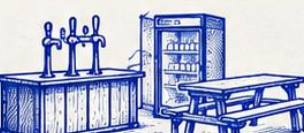
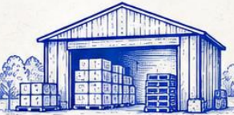
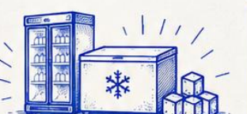
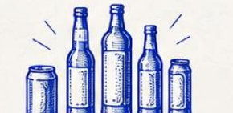
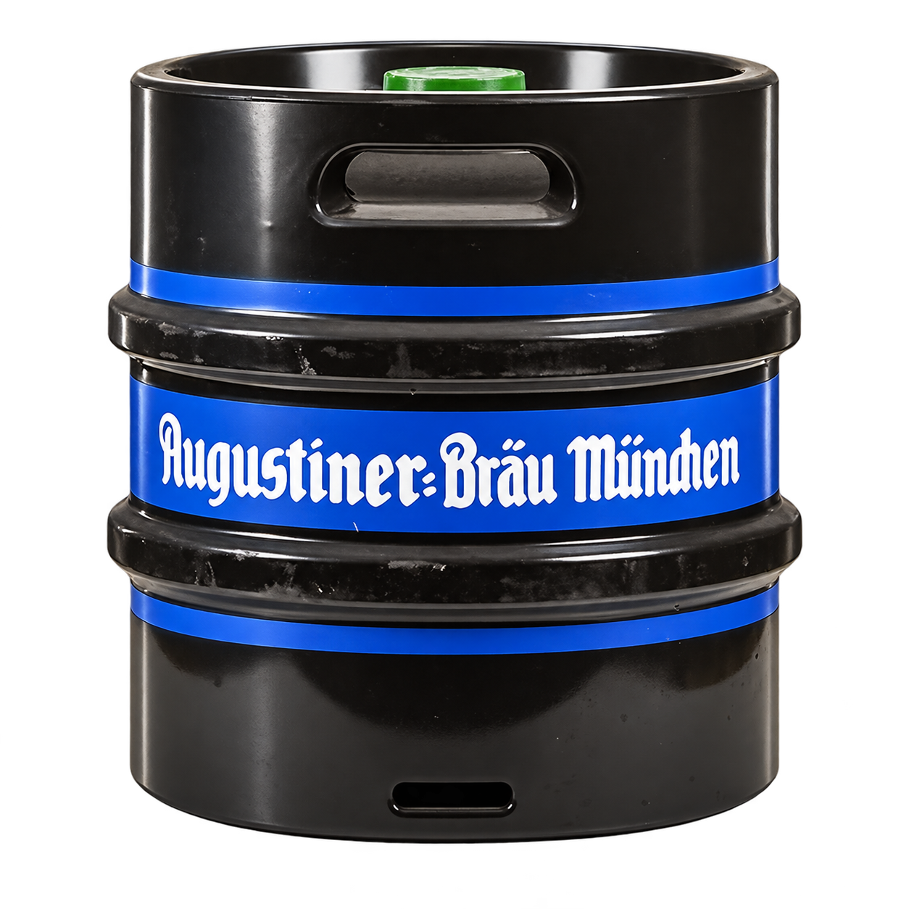
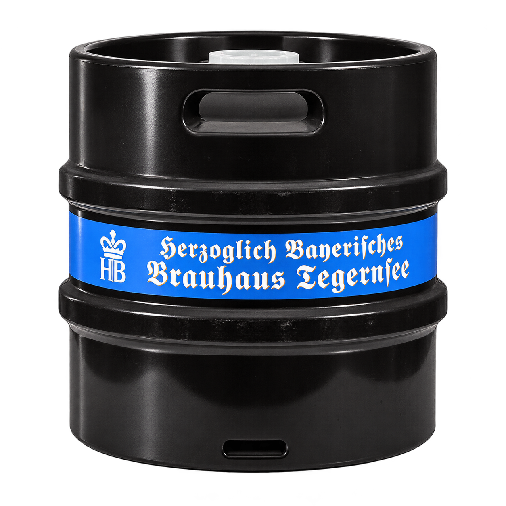

Rendezvényeszközök
Sörpadok, sörcsapok, hűtők, pultok és szódagép – amik jól jönnek egy otthoni vagy kerti ünnepléshez.
Születésnap, kerti parti, családi ünnep vagy baráti összejövetel? Nálunk te döntöd el, mennyi segítségre van szükséged: bérelhetsz csak eszközöket, kérhetsz italokat és jeget, vagy ránk bízhatod a teljes rendezvény lebonyolítását.
Legyen szó egy meghitt családi összejövetelről vagy egy nagyobb kerti partiról: az eszközöktől az italokon át, igény esetén a teljes szervezésig és helyszíni lebonyolításig számíthatsz ránk.
Nem kell mindent egyedül beszerezned vagy megszervezned. Válassz a szolgáltatásainkból, vagy mondd el, milyen ünnepséget képzeltél el, és állítsuk össze együtt a megoldást.

Sörpadok, sörcsapok, hűtők, pultok és szódagép – amik jól jönnek egy otthoni vagy kerti ünnepléshez.

Saját pilisvörösvári itallerakatunkból segítünk összeállítani a vendégekhez és az alkalomhoz illő italválasztékot.

A hideg italokról is gondoskodunk: jeget értékesítünk, és igény szerint hűtőket is biztosítunk.

Üdítők, borok, röviditalok és minőségi sörök a partihoz – akár csak az italokat kéred, akár a felszolgálást is.
Nem szeretnél egész este a vendégek kiszolgálásával foglalkozni? Igény szerint személyzetet is biztosítunk.
Ha szeretnéd, a szükséges eszközök és italok biztosításán túl a rendezvény előkészítését és helyszíni lebonyolítását is vállaljuk.
Bajor sörkülönlegességek hordós kiszerelésben. Igény szerint sörcsapot és helyszíni italkiszolgálást is biztosítunk.


A hordók tájékoztató jelleggel jelennek meg. A rendelhető márkák és elérhető kiszerelések kapcsán kérj ajánlatot.
A Wunderbar rendezvényes italkiszolgálásában szerzett tapasztalatunkat most a kisebb, személyesebb alkalmakon is kamatoztatjuk. Legyen születésnap, családi ünnep vagy baráti kerti parti, a Fest Hubbal nem kell mindent külön-külön intézned. Mi biztosíthatjuk a felszerelést, az italokat, a jeget és a személyzetet – vagy igény szerint a teljes lebonyolítást is.
Meséld el, mit ünnepeltek, hol, mikor és körülbelül hány vendéggel. Akkor is írj nyugodtan, ha még csak az ötlet van meg: közösen kitaláljuk, miben tudunk segíteni.
Csak pár sörpad kell? Ital és jég is jól jönne? Vagy szeretnéd az egész lebonyolítást ránk bízni? Írd meg, mire készülsz, és személyre szabott ajánlatot adunk.
Az ajánlatkérés egyelőre a levelezőprogramodban nyílik meg, külön webes űrlapot később készítünk.
Ajánlatkérés e-mailben ↗